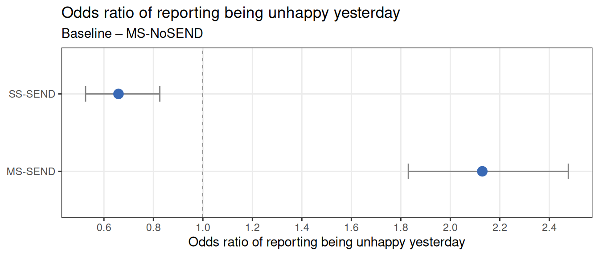
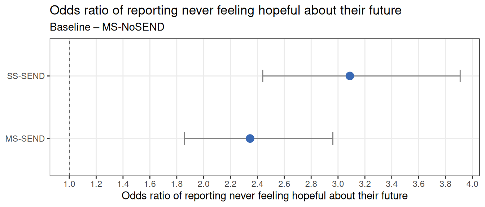
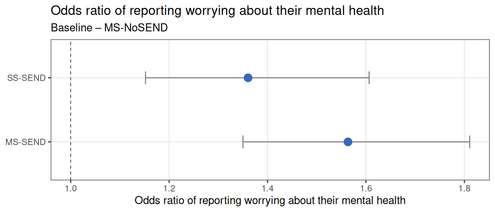
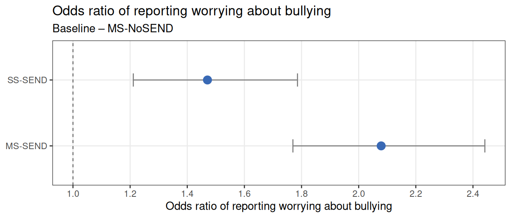
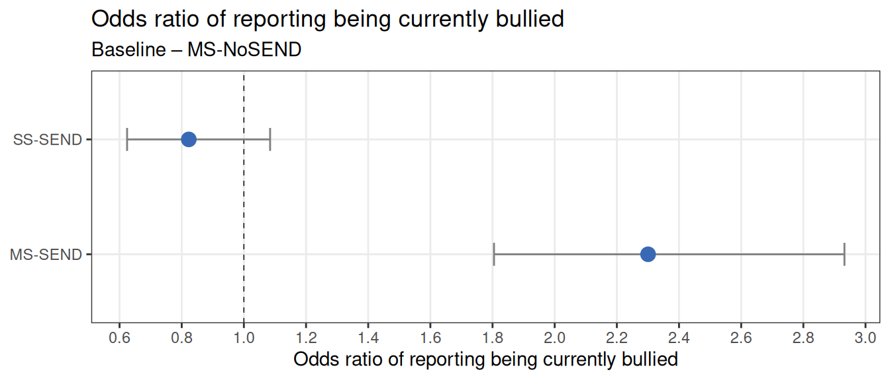
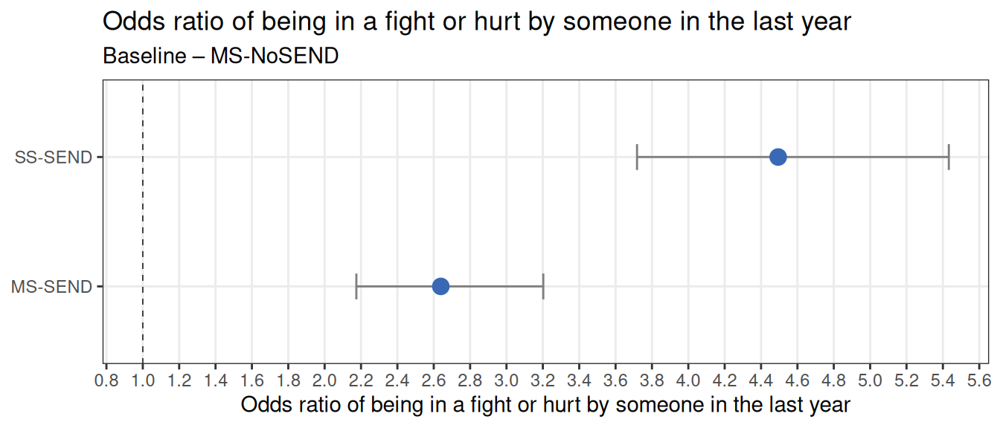

| Abbreviation | Grouping |
|---|---|
| MS-SEND | Mainstream school students reporting SEND |
| MS-NoSEND | Mainstream school students not reporting SEND |
| SS-SEND | Students attending SEND schools |
Abstract
This analysis uses the most recent mainstream YPHWS cohort (2024), alongside the inaugural SEND cohort (2025). Students are categorised into three groups: mainstream students without reported SEND (13,745 students), mainstream students reporting SEND (795 students), and students who attend SEND schools (635 students).
Students from SEND schools include young people from over 15 specialist schools, those who are electively home educated or not currently in education, and the mainstream YPHWS also includes students who are electively home educated, or in different provision, for non-SEND reasons.
For the mainstream YPHWS, only the most recent response from each student is included. This avoids the risk of double counting students who completed the survey in more than one year. In the SEND survey, some questions were adapted to improve accessibility. Where this occurred, equivalent questions from the mainstream survey were identified and matched as closely as possible. Although comparisons are made between groups, differences in survey wording and the timing of data collection mean that findings should be interpreted as indicative rather than exact comparisons.
Although the number of students reporting SEND in mainstream schools and those attending SEND schools is considerably smaller than the number of mainstream students without SEND, this analysis identifies marked differences between cohorts in wellbeing, feelings about the future, experiences of bullying, and concerns about mental health. Results for some questions (such as current bullying) are based on a smaller number of responses, so should be interpreted with some caution.
Throughout the report, students from mainstream schools reporting SEND are abbreviated to MS-SEND, students from mainstream school not reporting send are abbreviated to MS-NoSEND, and students attending SEND schools are abbreviated to SS-SEND.
NoteAbbreviations
Methods
In the following report we assess how SEND status relate to:
- Whether they felt happy the day before the survey;
- Whether they are hopeful about their future;
- Whether they worry about their mental health;
- Whether they worry about bullying;
- Whether they are currently bullied;
- Whether they have been in a fight.
Throughout the report, two approaches to data visualisation are used. The first is bar graphs, which display results for each of the three student groups. For each group, 95% confidence intervals are shown, indicating the range within which the true population value is likely to lie. Differences between groups can be considered statistically meaningful where confidence intervals do not overlap, or where the 95% CI for an odds ratio does not include 1, indicating that the odds differ from those of the baseline group.
Responses of “prefer not to say”, “not sure”, or missing were excluded from analysis so that comparisons were restricted to students who provided clear responses. To comply with disclosure control and suppression guidelines, raw counts have been rounded to the nearest five.
To investigate links between SEND status and issues related to happiness and worries, logistic regression is used. This is a form of regression analysis where the response variable is binary (i.e. Yes/No). Logistic regression allows us to assess how predictors are associated with outcomes. We also compare the strength of these associations using odds ratios
The analysis does not confirm causation. Predictors can only be linked to response variables (particularly if they are significant). It cannot be said for certain whether the predictor causes the response.
In some of the examples below, there are graphical representations of the logistic regression analysis and odds ratio outputs. In these graphs, there is a baseline group in which other groups are compared against (baselines are clarified in the examples), from which groups can be claimed to have higher or lower odds to have a certain characteristic (e.g. to report being unhappy the day before the survey).
A statistically significant relationship between the explanatory and response variables is outlined when the p-value is lower than the 0.05 threshold. In this case, the p-value is small enough to reject the null hypothesis of the conducted test, which is that there is no relationship between the variables.
How happy did you feel yesterday?
There were 15,170 students who answered this question, and the number responses had “don’t know”, “prefer not to say”, or “NA” were less than 5, and are not included in the analysis.
NoteNumber of responses
| Category | Response | Count (suppressed) |
|---|---|---|
| MS-NoSEND | Happy | 8,110 |
| MS-NoSEND | Ok | 2,845 |
| MS-NoSEND | Unhappy | 2,790 |
| MS-SEND | Happy | 370 |
| MS-SEND | Ok | 145 |
| MS-SEND | Unhappy | 280 |
| SS-SEND | Happy | 220 |
| SS-SEND | Ok | 320 |
| SS-SEND | Unhappy | 90 |
| SS-SEND | NA | NA |
MS-NoSEND had the highest proportion of respondents reporting feeling happy on the day before completing the survey. This was followed by MS-SEND, while SS-SEND had the lowest proportion to report being happy. However, 35.2% of MS-SEND said they were unhappy, which is almost 1.75 times higher than the proportion of MS-NoSEND, and almost 2.5 times higher than SS-SEND.

When comparing the odds of reporting being unhappy on the day before the survey, MS-NoSEND were used as the reference group. The odds of reporting unhappiness were around 30% lower among SS-SEND. MS-SEND had the highest odds of reporting unhappiness, with an odds ratio of 2.1. Compared with MS‑NoSEND, the odds of MS-SEND reporting being unhappy on the day before the survey were more than two times higher.
Do you feel hopeful for your future?
There were 15,170 students who answered this question, and 0 responses had “don’t know”, “prefer not to say”, or “NA” responses that are not included in the analysis.
NoteNumber of responses
| Category | Response | Count (suppressed) |
|---|---|---|
| MS-NoSEND | Always | 2,730 |
| MS-NoSEND | Never | 700 |
| MS-NoSEND | Often | 4,935 |
| MS-NoSEND | Sometimes | 5,025 |
| MS-NoSEND | NA | 355 |
| MS-SEND | Always | 125 |
| MS-SEND | Never | 90 |
| MS-SEND | Often | 215 |
| MS-SEND | Sometimes | 350 |
| MS-SEND | NA | 15 |
| SS-SEND | Always | 90 |
| SS-SEND | Never | 90 |
| SS-SEND | Often | 145 |
| SS-SEND | Sometimes | 305 |
| SS-SEND | NA | NA |
MS-NoSEND had the highest proportion of students reporting always feeling hopeful about their future. This was followed by MS-SEND, while SS-SEND had the lowest proportion to report always being hopeful.
SS-SEND had the highest proportion to report never feeling hopeful about their future, at almost three times the rate of MS-NoSEND (14.4% compared with 5.2%). A higher proportion of MS-SEND reported never feeling hopeful than MS-NoSEND, with around twice the proportion.

SS‑SEND students had the highest odds of reporting that they never felt hopeful about their future, with odds around three times higher than those of MS‑NoSEND students. MS‑SEND students also showed increased odds, at more than twice those of the baseline group.
Do you worry about your mental health?
There were 15,170 students who answered this question, and are included in the analysis. There were no responses had “don’t know”, “prefer not to say”, or “NA”.
NoteNumber of responses
| Category | Response | Count (suppressed) |
|---|---|---|
| MS-NoSEND | No | 9,700 |
| MS-NoSEND | Yes | 4,040 |
| MS-SEND | No | 480 |
| MS-SEND | Yes | 315 |
| SS-SEND | No | 405 |
| SS-SEND | Yes | 230 |
Over a third of MS-SEND and SS-SEND reported worrying about their mental health, and the difference between these two groups was not statistically significant. MS-NoSEND had a significantly lower proportion than both MS-SEND and SS-SEND reporting being worried about their mental health, however, this is still a high proportion of students.

The odds of reporting worrying about mental health were almost 1.6 times higher among MS‑SEND students and almost 1.4 times higher among SS‑SEND students, compared with MS‑NoSEND students.
Do you worry about bullying?
There were 15,170 students who answered this question, and are included in the analysis. There were no responses had “don’t know”, “prefer not to say”, or “NA”.
NoteNumber of responses
| Category | Response | Count (suppressed) |
|---|---|---|
| MS-NoSEND | No | 11,555 |
| MS-NoSEND | Yes | 2,190 |
| MS-SEND | No | 570 |
| MS-SEND | Yes | 225 |
| SS-SEND | No | 495 |
| SS-SEND | Yes | 140 |
MS-SEND had the highest proportion of students reporting worrying about bullying, with nearly twice the proportion compared with MS-NoSEND. SS-SEND reported similar levels of concern about bullying to MS-SEND, and both groups showed significantly higher proportions than MS-NoSEND.

Students with SEND had a higher odds of reporting worrying about bullying. The odds were twice as high for MS‑SEND and approximately 1.5 times higher for SS‑SEND compared with MS‑NoSEND.
Are you currently being bullied or picked on?
There were 5,415 students who answered this question, and 9,760 responses had “don’t know”, “prefer not to say”, or “NA” responses that are not included in the analysis.
NoteNumber of responses
| Category | Response | Count (suppressed) |
|---|---|---|
| MS-NoSEND | No | 3,875 |
| MS-NoSEND | Yes | 635 |
| MS-NoSEND | NA | 9,235 |
| MS-SEND | No | 270 |
| MS-SEND | Yes | 100 |
| MS-SEND | NA | 425 |
| SS-SEND | No | 470 |
| SS-SEND | Yes | 65 |
| SS-SEND | NA | 100 |
MS-SEND had the highest proportion of students reporting being currently bullied, with nearly twice the proportion compared with MS-NoSEND, and over twice that of SS-SEND. The proportion of students reporting being bullied among MS-SEND was significantly higher than both MS-NoSEND and SS-SEND.

MS-SEND had twice the odds of reporting being currently bullied compared to MS-NoSEND. Although SS-SEND showed lower odds of reporting being currently bullied, the confidence interval crossed the reference value of 1, indicating that this difference was not statistically significant when compared to MS-NoSEND.
In the last year, have you been in a fight or hurt by someone?
There were 13,950 students who answered this question, and 1,225 responses had “don’t know”, “prefer not to say”, or “NA” responses that are not included in the analysis.
NoteNumber of responses
| Category | Response | Count (suppressed) |
|---|---|---|
| MS-NoSEND | No | 11,565 |
| MS-NoSEND | Yes | 1,110 |
| MS-NoSEND | NA | 1,070 |
| MS-SEND | No | 565 |
| MS-SEND | Yes | 145 |
| MS-SEND | NA | 90 |
| SS-SEND | No | 395 |
| SS-SEND | Yes | 170 |
| SS-SEND | NA | 65 |
SS-SEND had the highest proportion of students who reported they had been in a fight or hurt my someone within the past year, with over a quarter of people who answered the question saying yes. This was followed by MS-SEND, and MS-noSEND had the lowest proportion.

Relative to MS‑NoSEND students, the odds of having been in a fight or hurt by someone in the past year were more than 4 times higher among SS‑SEND students and around 2.6 times higher among MS‑SEND students.
Conclusions
There are substantial inequalities between young people without SEND in mainstream schools, those with SEND in mainstream schools, and those attending SEND schools in their emotional wellbeing and experiences of bullying.
Students in mainstream schools without SEND consistently report more positive experiences, including feeling hopeful about the future, and reporting lower levels of bullying. In contrast, young people with SEND report poorer experiences overall, particularly those attending mainstream schools.
Students with SEND in mainstream schools appear to be particularly vulnerable. They had around twice the odds of reporting feeling unhappy on the day before the survey, more than twice the odds of reporting never feeling hopeful about the future, higher odds of worrying about their mental health, over twice the odds of reporting being currently bullied, and 2.5 the odds of having been in a fight in the past year, compared with students without SEND in mainstream schools. These findings suggest that students with SEND in mainstream schools may have unmet needs and are at increased risk of low mood and bullying.
For some outcomes, students attending SEND schools reported poorer experiences than those with SEND in mainstream schools, particularly in relation to feeling hopeful about the future. However, for other outcomes, such as being currently bullied, their experiences were less severe than those of students with SEND in mainstream schools. As some students from SEND schools received support while completing the survey, there is also the possibility some students may have played down their experiences. While the reasons for these differences were not explored in this analysis, they may reflect differences in school environments or levels of targeted support. As the SEND survey was only introduced in 2025, this survey may not cover all students from different types of SEND schools, who may have different experiences and needs.
Overall, SEND status is strongly associated with poorer wellbeing outcomes, particularly in relation to optimism about the future, mental health concerns, and experiences of bullying. The consistently poorer outcomes observed among students with SEND in mainstream schools highlight a vulnerable group that may require targeted and additional support.